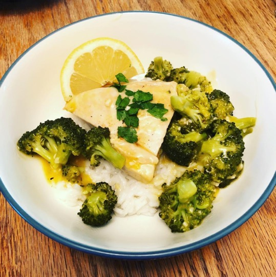

Lemon Garlic Chicken with Broccoli

Ingredients
- 2 pounds boneless chicken breasts
- 1 tablespoon olive oil
- Salt and pepper to taste
- 1/2 teaspoon paprika
- 4 tablespoons butter, divided
- 4-5 cloves garlic, minced
- 10.5 ounces (1 can) Condensed Cream of Chicken Soup
- 3/4 cup water
- 2 to 3 cups chopped broccoli
- 1 teaspoon chopped fresh parsley
- Lemon wedges
Instructions
Season chicken with olive oil, salt, pepper and paprika. Set aside.
Heat large pan on medium-high heat. Melt half the butter (2 tablespoons). Add the chicken and cook for 5 minutes on each side or until the chicken is browned. Remove chicken from pan, cover and keep warm.
In same pan melt remaining 2 tablespoons of butter, add the garlic and cook until garlic is lightly brown and fragrant. Whisk in the condensed cream of chicken soup and water. Cook until the mixture is hot and bubbly, then turn heat down to low.
Add chicken and broccoli back into the pan cover the pan with a lid and cook for about another 10 minutes or until chicken is cooked through.
Serve with rice and wedges of lemon. Garnish with chopped parsley if desired.
Original Source: Best Recipe Box